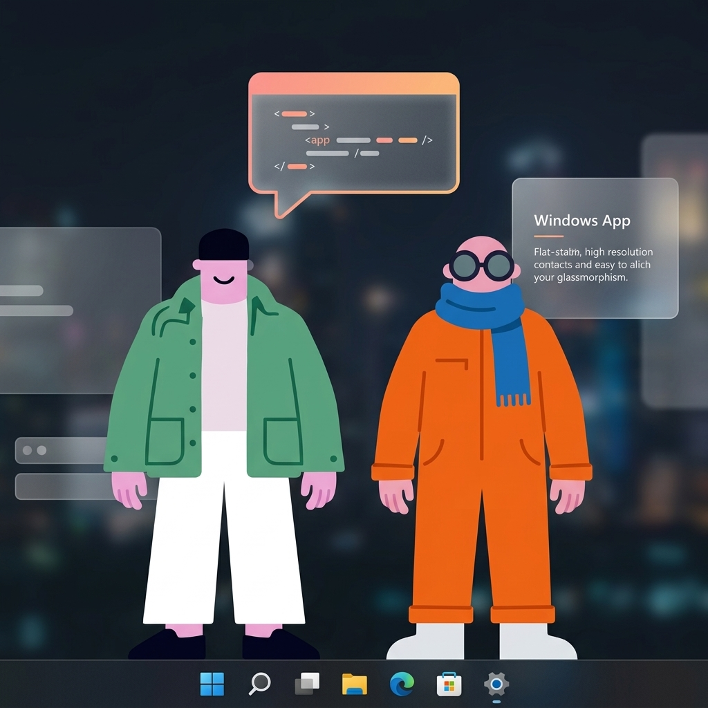

Bruce & Jazz walk above your taskbar. Click one to open an AI terminal powered by Claude, Codex, Gemini, Copilot, or OpenCode. They think, they vibe, they code.

A faithful port of the macOS original, rebuilt natively for Windows with Electron.
Transparent WebM videos with alpha channels. Smooth eased motion curves — acceleration, cruise, and deceleration per character.
Instant provider switching, dynamic transparency, and 'Always on Top' layering. Tailor Bruce & Jazz to your workspace distraction-free.
Switch between Claude, Codex, Gemini, Copilot, and OpenCode. Auto-detects which CLIs you have installed.
Click any character to open a themed terminal popover. Full streaming responses, tool use indicators, and slash commands.
Playful phrases float above characters while they work. "vibing...", "cooking...", "don't rush me", "connecting dots".
Peach, Midnight, Cloud, and Moss. Each with a distinct personality — from playful pink to terminal-hacker green.
Characters walk above your Windows taskbar using transparent BrowserWindows. Always-on-top, click-through, and DPI-aware.
Switch between providers from the system tray → Provider menu. The app auto-detects which CLIs are in your PATH.
| Provider | Binary | Install | Mode |
|---|---|---|---|
| Claude | claude |
npm i -g @anthropic-ai/claude-code |
Stream JSON |
| Codex | codex |
npm i -g @openai/codex |
Per-message |
| Gemini | gemini |
npm i -g @google/gemini-cli |
Per-message |
| Copilot | copilot |
npm i -g @github/copilot-cli |
Per-message |
| OpenCode | opencode |
curl -fsSL https://opencode.ai/install | bash |
Per-message |
Practical guides for getting the most out of your AI companions.
Let Bruce handle code reviews while you focus on writing features. Click him, describe the file, and watch the magic.
Use Bruce for code questions and Jazz for documentation. Split your workflow between two always-available agents.
Ask the same question using different providers. Switch from Claude to Codex mid-conversation to compare responses.
Use your agents like a smart search. Click, ask, and minimize — the thinking bubble tells you when they're done.
Match your terminal theme to your mood. Midnight for late-night coding, Peach for creative work, Moss for focus.
Use /clear to reset the conversation and /copy to grab the last response to your clipboard.
A faithful port of the macOS original, with platform-specific adaptations for Windows.
Switch themes from the system tray. Each has a unique color palette, font, and vibe.
Playful pink & warm
Dark mode + orange
Clean Fluent UI
Retro organic
Three commands and your desktop will never be the same.